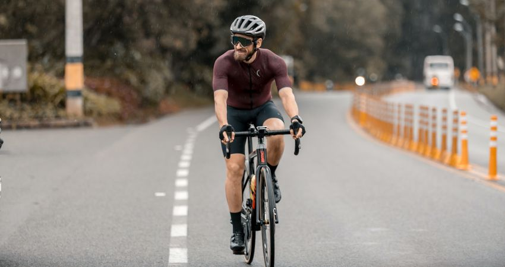

Te dejamos unas recomendaciones que te ayudarán a cuidar y sacarle el mayor provecho a tu bici, además de un par de consejos a tener en cuenta cuando vayas a salir a rodar que te pueden ahorrar un dolor de cabeza.
No salir en ayunas, lleva siempre buena hidratación y si el entreno o fondo pasa de dos horas, debes llevar alimentos y energía necesaria
Lleva contigo una identificación
No olvides llevar dinero en efectivo si vas a salir a zona rural
Trata de indagar sobre la ruta en la que vas a rodar (Estado de la carretera, seguridad, inclinación, exigencia)
Avisarle a alguien que ruta vas a tomar y con quien vas a ir
Si vas a salir solo, en la noche o muy de madrugada, llevar luces adelante y atrás, y ropa reflectiva
Siempre lleva contigo en la bici, una cadena o pulsera, tus datos (Nombre completo, Cédula, RH y Teléfono de contacto de emergencia)
Intenta no llevar música
Si te vas a colocar o quitar alguna prenda, para
Los termos deben ser plásticos. Nunca ruedes con una botella de vidrio
Los estiramientos se realizan después de los entrenos
Las medias de compresión se usan después de las rodadas, en tu casa u oficina
Siempre debes ir con las manos en el manubrio
Siempre debes estar muy atento al corredor que va adelante tuyo, y más si vas a rueda
Cuando vayas a rueda, procura ir atrás de la llanta trasera, no colocar tu rueda delantera a ningún lado de la del ciclista de delante
Cuando el terreno sea rizado o inestable, agarra con fuerza el manubrio de la bici
No "jugar de manos" con tus compañeros de grupo
Señala los huecos del camino si vas en primera o segunda
Sortea los obstáculos con las mejores prácticas de la técnica
Procura llevar tus manos cerca de los frenos
No adelantes en medio de dos ciclistas, siempre por un costado
No hacer zigzag en carretera ni entre los vehículos
No adelantes carros por la izquierda
Conserva siempre tu derecha
Rueda sobre de la berma
Evita hacer "tras carros" - Colocarte detrás de un carro
Respeta las señales de tránsito
Cuando vayas a hacer un cruce o U, asegúrate de mirar a ambos lados, adelante y atrás
No acortar camino en las curvas (siempre mantén tu carril derecho, no invadas el izquierdo)
Aprende y utiliza las señales propias del ciclismo - Con las manos (Con compañeros y con tránsito)
Respeta los cruces en pueblos y lugares poco poblados
En lo posible utiliza un pito
Bicicleta
Casco (Obligatorio)
Gafas
Guantes
Gorro o buff si vives o vas a entrenar en región fría
Jersey de lycra
Si vives o vas a entrenar en frío, mangas o cortafrío
Chubasquero (Impermeable)
Pantaloneta cargadera 3/4 o largo, dependiendo del clima
Medias arriba del tobillo
Tennis para empezar (Si estás haciendo 45 a 50 hrs mensuales, ve por tus chocles)
Chocles
Neumático de repuesto y/o kit de despinche
Bomba - Inflador
Paletas para separar llanta de neumático
Linterna (Que tenga intermitencia)
Juego de llaves hexagonales - (Tipo Allen)
Toalla o trapo (Para limpiarse las manos)
Bloqueador
Un botiquín pequeño con lo básico
Cambiar la cadena (Cada 400 horas de rodaje aprox.)
Calibrar la presión (120 -140 psi - 6 a 8 Bar) - Si vas a entrenar en altura, vete con 120 - 125
Revisar el ajuste de las ruedas (Que la llave del eje quede bien asegurada)
Alistamiento (Limpieza) Cada 50 a 60 hrs
Mantenimiento completo cada 90 a 100 hrs max
Cambia las pastas de los frenos cada 90 a 100 hrss